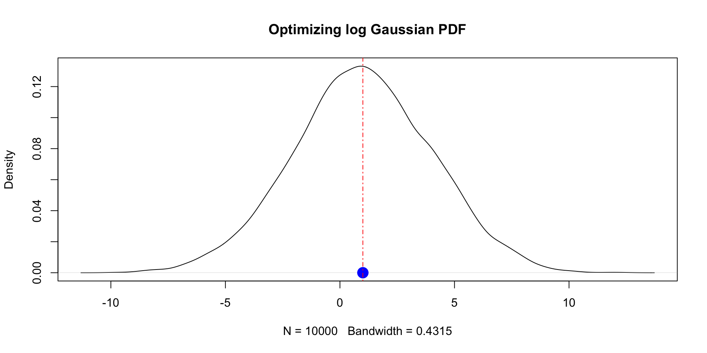

2025-09-25
df |> mutate(
a = (a - min(a, na.rm = TRUE)) /
(max(a, na.rm = TRUE) - min(a, na.rm = TRUE)),
b = (b - min(a, na.rm = TRUE)) /
(max(b, na.rm = TRUE) - min(b, na.rm = TRUE)),
c = (c - min(c, na.rm = TRUE)) /
(max(c, na.rm = TRUE) - min(c, na.rm = TRUE)),
d = (d - min(d, na.rm = TRUE)) /
(max(d, na.rm = TRUE) - min(d, na.rm = TRUE)),
)normalize <- function(x) {
(x - min(x, na.rm = TRUE)) /
(max(x, na.rm = TRUE) - min(x, na.rm = TRUE))
}
df |> mutate(
a = normalize(a),
b = normalize(b),
c = normalize(c),
d = normalize(d),
)# A tibble: 5 × 4
a b c d
<dbl> <dbl> <dbl> <dbl>
1 0.564 0.161 0.208 0.391
2 0 0.215 0.253 0.723
3 0.231 0.327 1 1
4 0.299 1 0 0.524
5 1 0 0.222 0 Choose an evocative name that makes your code easier to understand.
As requirements change, you only need to update code in one place, instead of many.
You eliminate the chance of making incidental mistakes when you copy and paste (i.e. updating a variable name in one place, but not in another).
It makes it easier to reuse work from project-to-project, increasing your productivity over time.
normalizeNormalize based on user specified quantiles instead of min and max.
normalizeThis new function breaks the existing code:
Error in `mutate()`:
ℹ In argument: `a = normalize(a)`.
Caused by error in `normalize()`:
! argument "probs" is missing, with no defaultHow to fix it?
normalizeWe can add a default value so that legacy code (existing users of the function) doesn’t break.
normalize <- function(x, probs=c(0,1)) {
rng <- quantile(x, probs = probs, na.rm = TRUE)
(x - rng[1]) / (rng[2] - rng[1])
}
df |> mutate(
a = normalize(a),
b = normalize(b),
c = normalize(c),
d = normalize(d),
)# A tibble: 5 × 4
a b c d
<dbl> <dbl> <dbl> <dbl>
1 0.564 0.161 0.208 0.391
2 0 0.215 0.253 0.723
3 0.231 0.327 1 1
4 0.299 1 0 0.524
5 1 0 0.222 0 Functions that take other functions as arguments or return functions as their result.
base::apply function signature:
X is an array (matrix)MARGIN indicates whether the function will be applied over 1: rows or 2: columns.FUN is a function to be applied.... (dot-dot-dot) is a special argument, “catch-all”, that allows you to pass a variable number of arguments to a function.
[1] 5.5 5.0 4.5[1] 2.5 5.0 7.5na.rm is an argument to mean function, not apply.
optim the greatpar: initial values for the parameters to be optimized.fn: the function to be minimized.gr: a function to compute the gradient of fn. If NULL, the gradient is approximated numerically....: arguments to be passed to fn and gr.optim the greatm <- 1
s <- 3
log_gaussian_pdf <- function(x, mu, sd) {
-dnorm(x, mean = mu, sd = sd, log = TRUE)
}
results <- optim(0, log_gaussian_pdf, mu = m, sd = s, method="Brent", lower=-100, upper=100)
results$par[1] 0.9999999
optim the greatMany uses:
Some functions are needed only in a specific context and serve no further use.
If function x^2 + x + 3 is used once and never really again, we can define it inline without naming it.
Function can call itself.
What does this function do?
Recursive functions are useful when for breaking down complex problem into simpler ones.
What is the output of foo(2)?
What is the output of f(3)?
getWhat will be the output?
do.callwhat: a function or a string naming the function to be called.args: a list of arguments to be passed to the function.Programming with Tidyverse: use double curly braces { }.
set.seed(123)
df <- tribble(
~group, ~number,
"A", rnorm(1, mean = -5, sd = 1),
"A", rnorm(1, mean = -5, sd = 1),
"A", rnorm(1, mean = -5, sd = 1),
"B", rnorm(1, mean = 10, sd = 1),
"B", rnorm(1, mean = 10, sd = 1),
)
df# A tibble: 5 × 2
group number
<chr> <dbl>
1 A -5.56
2 A -5.23
3 A -3.44
4 B 10.1
5 B 10.1 compute_stat <- function(df, group_var, stat_var, func) {
df |> group_by({{ group_var }}) |> summarise(stat = func({{ stat_var }}, na.rm=TRUE))
}
compute_stat(df, group, number, mean)# A tibble: 2 × 2
group stat
<chr> <dbl>
1 A -4.74
2 B 10.1 # A tibble: 2 × 2
group stat
<chr> <dbl>
1 A -14.2
2 B 20.2Variables defined inside a function are local to that function.
increment_counter <- function(x) {
# 'counter' is created fresh every time the function is called
counter <- 0
counter <- counter + 1
return(x + counter)
}
increment_counter(10)[1] 11[1] 21No state persists across function calls.
<<-make_counter <- function() {
# 1. A variable is created in the parent environment
count <- 0
# 2. The factory returns a new, inner function
inner_function <- function() {
# 3. Use the super-assignment operator '<<-'
# This modifies 'count' in the parent environment, not locally.
count <<- count + 1#<<
return(count)
}
return(inner_function)
}num_samples <- 100000
time_loop <- system.time({
x <- numeric(num_samples)
for (n in 1:num_samples) {
x[n] <- rnorm(1) # Corrected from x[i] and specified rnorm(1)
}
})
time_vectorized <- system.time({
y <- rnorm(num_samples)
})
print(time_loop) # Loop time user system elapsed
0.209 0.047 0.262 user system elapsed
0.006 0.000 0.006 testthattestthat https://testthat.r-lib.org/.testthat offers various convenient functions to check if your function behaves as expected.